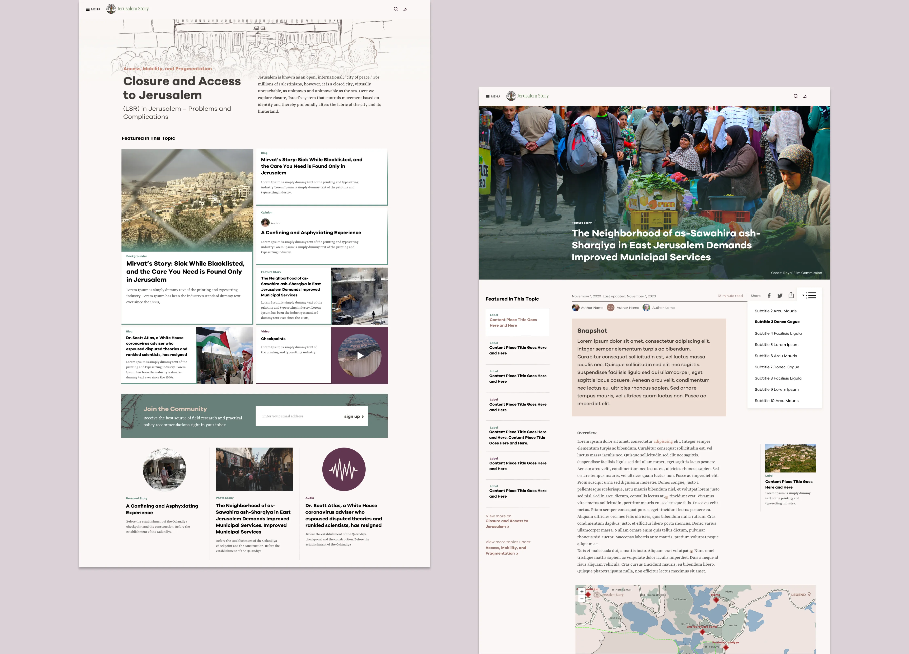
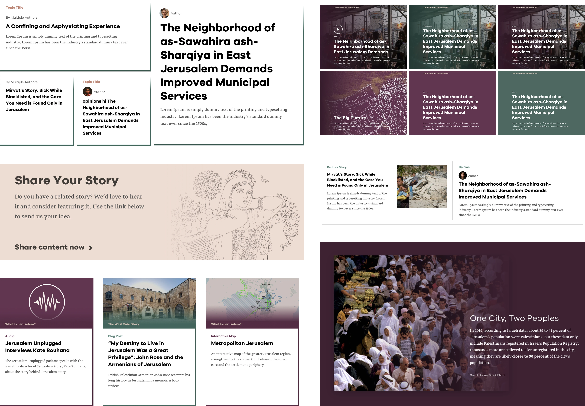
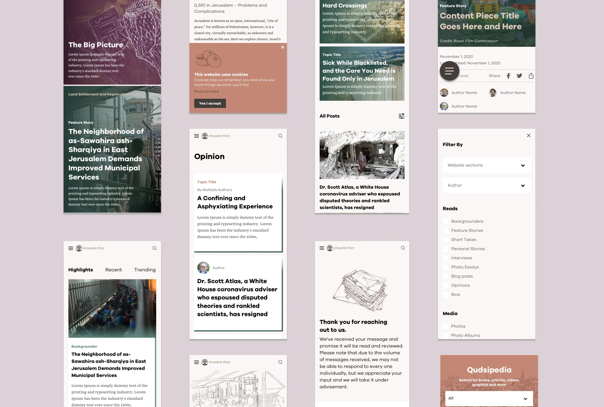

Jerusalem Story
A digital space that captures the essence and rich history of an extraordinary city.
Jerusalem has more history than any one page can hold. The site gives it room: the city’s story, told in one place.
Syntax was the leading branding and digital design agency, creating a digital space that captures the essence and rich history of this extraordinary city. I built the front end.
TOPICS AND LANDING
Each topic opens on a drawing of people, left in simple outline. It feels unfinished on purpose; the stories fill it in. Colour has a job too: every topic gets its own, so you always know where you are on the platform.

BLOCKS AND PARTITIONS
A modular system: every content type has a block that adapts to wherever it lands on the site. Colour, type, imagery and illustration are kept in balance, so nothing competes with the content itself.

RESPONSIVE

THE OBSESSING PART
Every project here has a detail nobody asked for and nobody will spot. I fixed it anyway. Bring me one more.